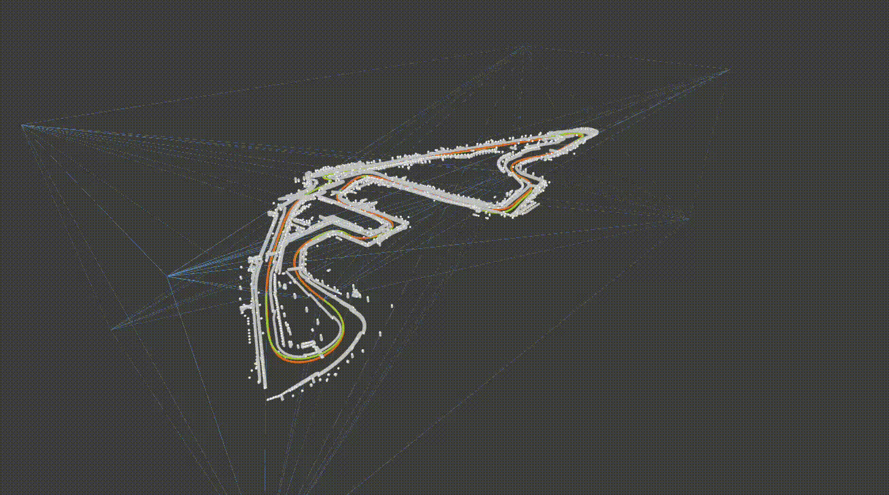

FlexCloud¶
Georeferencing of Point Cloud Maps



FlexCloud enables the georeferencing of an existing point cloud map created only from perception sensor data (e.g. LiDAR) by leveraging the corresponding GNSS data. Using the concept of rubber-sheeting from cartography, the tool also accounts for accumulated errors during map creation and rectifies the map.
Functionalities¶
- Direct & modular — keyframe interpolation and georeferencing are exposed as two independent CLI tools that can be combined with any SLAM pipeline.
- Rubber-sheet drift correction — piecewise linear 3D rubber-sheeting via Delaunay triangulation corrects accumulated SLAM drift.
- Reference-data agnostic — accepts text files or
ROS 2 bags (
NavSatFix/Odometry). - Built-in evaluation — RMSE, mean, median and per-segment deviation visualised in the Rerun viewer.
Citation¶
If you use FlexCloud in academic work, please cite the preprint:
@conference{leitenstern2025flexcloud,
author={Maximilian Leitenstern and Marko Alten and Christian Bolea-Schaser and Dominik Kulmer and Marcel Weinmann and Markus Lienkamp},
title={FlexCloud: Direct, Modular Georeferencing and Drift-Correction of Point Cloud Maps},
booktitle={Proceedings of the 11th International Conference on Vehicle Technology and Intelligent Transport Systems - Volume 1: VEHITS},
year={2025},
pages={157-165},
publisher={SciTePress},
organization={INSTICC},
doi={10.5220/0013359600003941},
isbn={978-989-758-745-0},
}
See Functionality & References for more details and related publications.